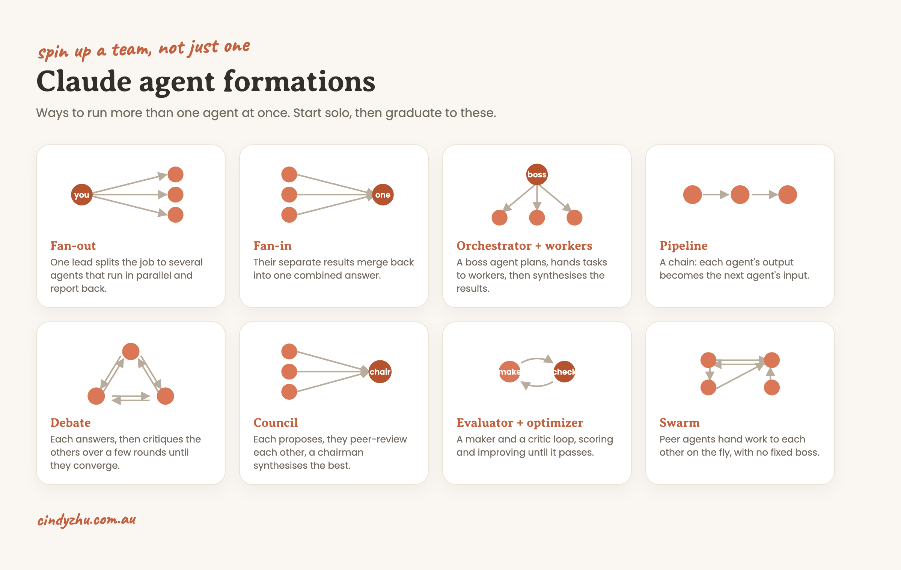

The hype makes agents sound like a money-printing robot you leave running overnight. The real version is calmer and way more useful: an agent is just Claude with one job, and you can run a whole team of them right inside Claude Code. Here is the weekend setup, then every formation you can graduate into, each with a line you can copy and paste to spin it up.
before you startYou need two things: a paid Claude plan and Claude Code installed. That is it. And one mindset: your first agent is ONE agent doing ONE job, with you watching. Walk before you orchestrate.
An agent is just Claude with its own instructions and one goal. When you open a normal chat, that is one Claude working for you. The unlock is that inside Claude Code you can spin up more of them at once, each off doing its own job and reporting back to you.
This is the part people overcomplicate. You do not type a command. You literally just ask Claude Code in plain English:
Spin up one subagent to do X. Or: spin up three subagents, one each for X, Y and Z.That sentence is the whole move. There is a /agents menu if you ever want to save a reusable named agent for later, but you do not need it to spin one up, and you definitely do not need it this weekend.
The safest and most useful first build. Give it a tight brief and lock it to one tool:
Spin up a research agent. Its job: search the web, summarise the top 5 findings, and always include the real source links, never invent them. Give it web search only, nothing else.It runs on its own and hands you back a clean, sourced summary.
A quick map before the detail:

Once one agent feels easy, run several at once. The first set below uses plain subagents (they report back to you, they do not talk to each other). The last note covers agents that talk to each other, which in Claude Code is an experimental feature called Agent Teams, off by default.
Each agent's output feeds the next, like an assembly line. The most intuitive one: research, then draft, then polish.
Use a 3-step pipeline: agent 1 researches [topic] with real sources, agent 2 drafts a reel script from the findings, agent 3 rewrites it in my voice. Hand each step's output to the next.One lead splits a job to several agents that run in parallel (fan-out), then their results merge back into one answer (fan-in). You rarely use one without the other.
Spin up 3 subagents in parallel, each on a different angle of [topic], then merge their findings into one brief with sources.A lead agent plans the work, breaks it into pieces, delegates each to a worker, and synthesises the results. This is Anthropic's named orchestrator-workers pattern, great for a big build with moving parts.
Act as the orchestrator: plan this task, split it into subtasks, delegate each to a worker subagent, then synthesise everything into one final result.A maker and a critic in a loop: one drafts, one scores it against your standard, and they go back and forth until it passes. This is the one most likely to genuinely sharpen your own content.
One subagent drafts the carousel copy, a second scores it against my style checklist and sends it back until it passes, then show me the final.Each agent proposes independently, they peer-review each other, and a chairman synthesises the best call. This is Karpathy's LLM Council, and you may already have it as the llm-council skill, so the simplest version is literally "ask the council."
Run this decision past 5 agents who each argue a different angle, then have a chairman synthesise the best call. Or just: ask the council.Each agent answers independently, then they critique each other over a few rounds and converge on a more accurate answer. Good for catching a confident-but-wrong take.
Spawn a few agents to each answer this, then have them pressure-test each other over two rounds and converge on the strongest answer.You will rarely need these, but they are real and worth knowing so you sound like you know the landscape: Mixture-of-agents (a layered council, drafts feed into more drafts), stochastic multi-agent consensus (spawn lots of varied agents and merge their takes, popularised by Nick Saraev), ACE (a self-improving trio that writes its own playbook), and Swarm (peers hand work to each other with no fixed boss, delivered in Claude Code by the experimental Agent Teams). Links for all of them are in the proof list below.
A simple ladder, do them in order:
Build AI systems with me through recorded lessons you can follow at your own pace. Join the waitlist for first access and the founding price.